奶酪
Fromage · 中文规则书全文转录
本页整理自微信公众号「无忧桌游」《奶酪》发布的《奶酪》(Fromage，2024)中文规则书扫描件(游卡中文版)：一款同时工人放置游戏，板图每回合旋转 90 度，你在朝向自己的扇形中采集资源、制作奶酪与熟成，以声望点数定胜负，含单人模式(与「公司」竞争)。原文同一规则书含两套扫描(1080px 与 1280px 各一整套)，本页采用高清套扫描图随文嵌入——点击任意图片即可放大查看，另一套仅作交叉校验。规则内容归版权方及游卡所有，转录仅供个人学习查阅。
整理说明：原书排印问题照录——「采集越多的资源要需要耗费越多的时间」(两套独立扫描的转录均照录此句)、「根据抽取订单牌商的需求」(疑为「牌上」)、「将订单牌弃除」、「扇形板/扇区板」用字不一。〔?〕为扫描件无法辨认之处：卡面环形印章小字、计分条末位数字、玩家面板英文印字等，请以随文扫描图为准。行内〔图标:××〕为印刷图标占位；印刷页 9/10 在扫描中顺序对调，已按页码归位。
插画:法国乡间全景(风车、奶牛、羊群、奶酪状山丘与小镇),铁艺招牌上题字:
FROMAGE 奶酪
背景故事
你是 20 世纪初某个法国小镇上的一位奶酪制作师,专注制作、熟成及售卖你的特色奶酪。你的经历是一曲充满激情与奉献的乐章,努力想要打造出一家在法国本土享誉盛名的顶级奶酪工厂,生产出最受大众欢迎的奶酪。
游戏概览
《奶酪》是一款同时工人放置游戏,游戏中你通过将工人〔图标:工人〕放置到面前自己的扇形来制作奶酪与采集资源。一旦所有玩家都执行完行动后,板图便会发生旋转,奶酪熟成,新的扇形将呈现在每位玩家面前。游戏结束时,你将根据自己的奶酪品质及对奶酪厂的资源管理情况获得声望点数〔图标:声望缎带〕,拥有最多声望点数的玩家将获得游戏胜利。
〔无〕
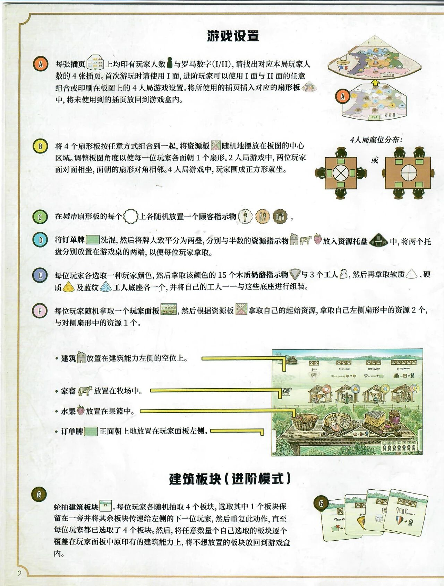
游戏设置
Ⓐ 每张插页〔图标:插页〕上均印有玩家人数〔图标:玩家人数标记〕与罗马数字(I/II),请找出对应本局玩家人数的 4 张插页。首次游玩时请使用 I 面,进阶玩家可以使用 I 面与 II 面的任意组合或印刷在板图上的 4 人局游戏设置。将所使用的插页插入对应的扇形板〔图标:扇形板〕中,将未使用到的插页放回到游戏盒内。
插图:插页插入扇形板的组装示意(图中以字母 A 标示)。
Ⓑ 将 4 个扇形板按任意方式组合到一起,将资源板〔图标:资源板〕随机地摆放在板图的中心区域。调整板图角度以使每一位玩家各面朝 1 个扇形。2 人局游戏中,两位玩家面对面相坐,面朝的扇形对角相邻。4 人局游戏中,玩家围成正方形就坐。
插图标注(两张餐桌俯视图之间及上方):
4人局座位分布:
或
Ⓒ 在城市扇形板的每个〔图标:齿形空位〕上各随机放置一个顾客指示物〔图标:顾客指示物 3 种〕。
Ⓓ 将订单牌〔图标:订单牌〕洗混,然后将牌大致平分为两叠,分别与半数的资源指示物〔图标:房屋、奶牛、水果〕放入资源托盘〔图标:资源托盘〕中,将两个托盘分别放置在游戏桌的两端,以便每位玩家拿取。
Ⓔ 每位玩家各选取一种玩家颜色,然后拿取该颜色的 15 个木质奶酪指示物〔图标:奶酪指示物〕与 3 个工人〔图标:工人〕,然后再拿取软质〔图标:白色三角〕、硬质〔图标:黄色三角〕及蓝纹〔图标:蓝纹三角〕工人底座各一个,并将自己的工人一一与这些底座进行组装。
Ⓕ 每位玩家随机拿取一个玩家面板〔图标:玩家面板〕,然后根据资源板〔图标:资源板〕拿取自己的起始资源,拿取自己左侧扇形中的资源 2 个,与对侧扇形中的资源 1 个。
- 建筑〔图标:房屋〕放置在建筑能力左侧的空位上。
- 家畜〔图标:奶牛〕放置在牧场中。
- 水果〔图标:草莓〕放置在果篮中。
- 订单牌〔图标:订单牌〕正面朝上地放置在玩家面板左侧。
插图:玩家面板实物图,上列四条要点以黄色引线指向图中对应位置。图中建筑印字依稀可辨:"BARN"〔?〕、"CHEESE HOUSE"〔?〕、"TRADING DOCK"〔?〕、"HEADQUARTERS"〔?〕;另有小字 "in Village"〔?〕;右下计分条上排格号为 1、2、3、4、5、6、7,下排缎带数值为 1、2、3、5、7、10、〔?〕。
建筑板块(进阶模式)
Ⓖ 轮抽建筑板块〔图标:建筑板块〕。每位玩家各随机抽取 4 个板块,选取其中 1 个板块保留在一旁并将其余板块传递给左侧的下一位玩家,然后重复此动作,直至每位玩家都已选取了 4 个板块。然后,将任意数量个自己选取的板块逐个覆盖在玩家面板中原印有的建筑能力上,将不想放置的板块放回到游戏盒内。
插图:数张建筑板块卡牌示意(图中以字母 G 标示;卡牌上印刷小字无法辨识)。
〔2〕
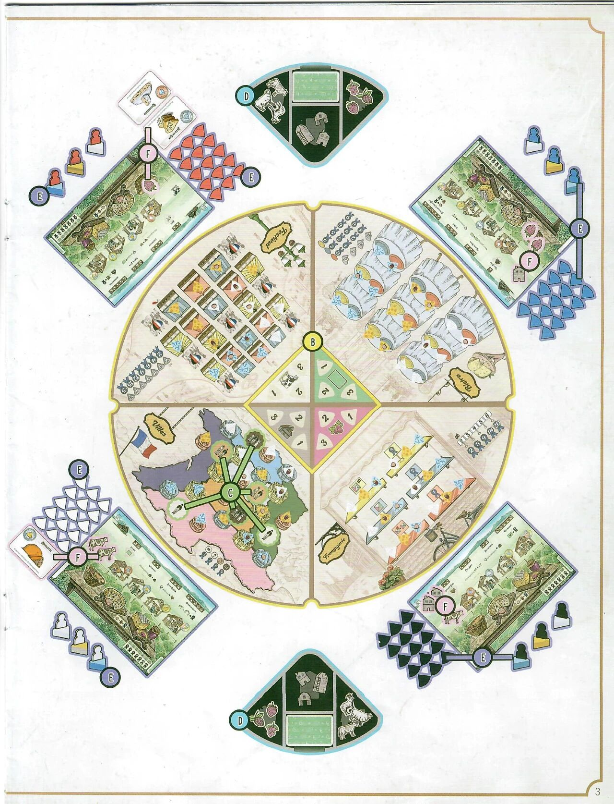
〔本页为整页插图:游戏设置完成后的全局摆放图——中央圆形主板图(四个扇形区与中央菱形区),四周环绕四块玩家板图、奶酪块 token、工人米宝及卡牌等。〕
图中圈码标注(依图中所见,均为圆圈字母):
- B(黄色圈,中央菱形区上方)
- C(绿色圈,主板图左侧法国地图区中央,带指针连线)
- D(蓝色圈,页面上方与下方的深色扇形角块上各一处)
- E(蓝灰色圈,多处:左侧工人米宝旁、红色奶酪块旁、右上玩家板图旁(带插针连线)、右下玩家板图旁(带插针连线)、左下白色奶酪块及工人米宝旁)
- F(粉色圈,多处:各玩家板图上,带插针连线)
〔主板图印刷的小字铭牌文字过小,多数无法逐字辨认〔?……?〕;仅可辨认:"Villes"、"Bistrot"(倒置),其余铭牌文字〔?〕。〕
〔3〕
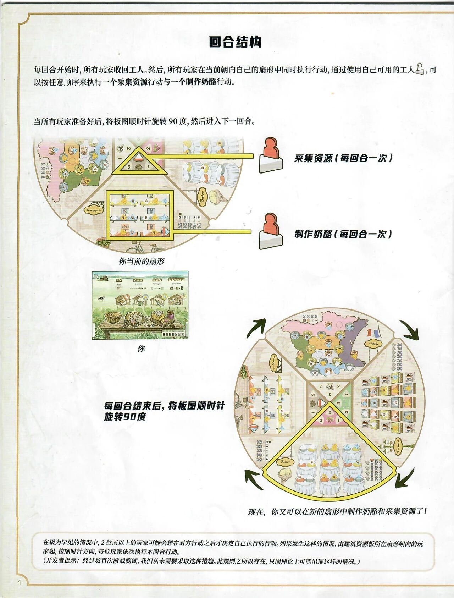
回合结构
每回合开始时,所有玩家收回工人。然后,所有玩家在当前朝向自己的扇形中同时执行行动,通过使用自己可用的工人〔图:工人图标〕,可以按任意顺序来执行一个采集资源行动与一个制作奶酪行动。
当所有玩家准备好后,将板图顺时针旋转 90 度,然后进入下一回合。
插图(主板图扇形局部,图中以黄框标出两处,引线指向右侧图注,旁有红色工人图标):
采集资源(每回合一次)
制作奶酪(每回合一次)
图注:你当前的扇形
插图(玩家板图局部)
图注:你
每回合结束后,将板图顺时针旋转90度
插图(整块圆形主板图,四周绿色箭头指示顺时针旋转)
图注:现在,你又可以在新的扇形中制作奶酪和采集资源了!
在极为罕见的情况中,2 位或以上的玩家可能会想在对方行动之后才决定自己执行的行动。如果发生这样的情况,由建筑资源板所在扇形朝向的玩家起,按顺时针方向,每位玩家依次执行本回合行动。
(开发者提示:经过数百次游戏测试,我们从未需要采取这种措施。此规则之所以存在,只因理论上可能出现这样的情况。)
〔4〕
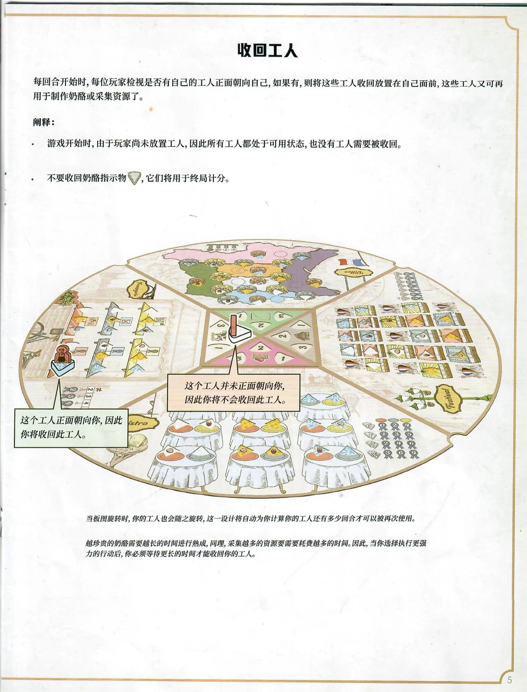
收回工人
每回合开始时,每位玩家检视是否有自己的工人正面朝向自己,如果有,则将这些工人收回放置在自己面前,这些工人又可再用于制作奶酪或采集资源了。
阐释:
- 游戏开始时,由于玩家尚未放置工人,因此所有工人都处于可用状态,也没有工人需要被收回。
- 不要收回奶酪指示物〔图:奶酪指示物图标〕,它们将用于终局计分。
插图(主板图全景,图中两个工人处各有一个引线标注框):
这个工人并未正面朝向你,因此你将不会收回此工人。
这个工人正面朝向你,因此你将收回此工人。
当板图旋转时,你的工人也会随之旋转,这一设计将自动为你计算你的工人还有多少回合才可以被再次使用。
越珍贵的奶酪需要越长的时间进行熟成,同理,采集越多的资源要需要耗费越多的时间。因此,当你选择执行更强力的行动后,你必须等待更长的时间才能收回你的工人。
〔5〕
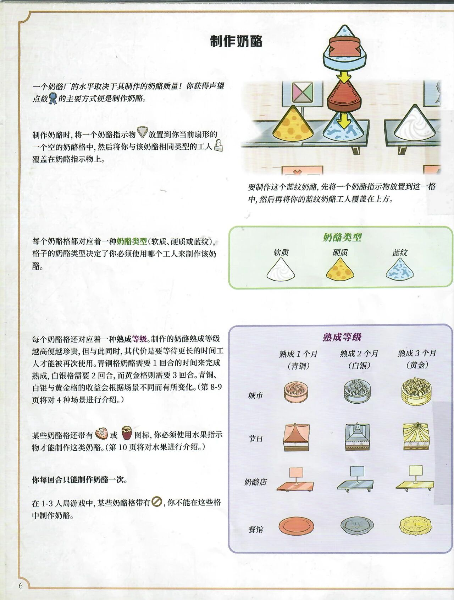
制作奶酪
一个奶酪厂的水平取决于其制作的奶酪质量!你获得声望点数〔图:声望点数奖章图标〕的主要方式便是制作奶酪。
制作奶酪时,将一个奶酪指示物〔图:奶酪指示物图标〕放置到你当前扇形的一个空的奶酪格中,然后将你与该奶酪相同类型的工人〔图:工人图标〕覆盖在奶酪指示物上。
插图(奶酪制作流水线示意,黄色箭头由上一格指向下一格):
图注:要制作这个蓝纹奶酪,先将一个奶酪指示物放置到这一格中,然后再将你的蓝纹奶酪工人覆盖在上方。
每个奶酪格都对应着一种奶酪类型(软质、硬质或蓝纹),格子的奶酪类型决定了你必须使用哪个工人来制作该奶酪。
插图(绿色边框卡片):
奶酪类型
| 软质 | 硬质 | 蓝纹 |
| --- | --- | --- |
| 〔图〕 | 〔图〕 | 〔图〕 |
每个奶酪格还对应着一种熟成等级。制作的奶酪熟成等级越高便越珍贵,但与此同时,其代价是要等待更长的时间工人才能被再次使用。青铜格奶酪需要 1 回合的时间来完成熟成,白银格需要 2 回合,而黄金格则需要 3 回合。青铜、白银与黄金格的收益会根据场景不同而有所变化。(第 8-9 页将对 4 种场景进行介绍。)
插图(紫色边框卡片):
熟成等级
| | 熟成 1 个月(青铜) | 熟成 2 个月(白银) | 熟成 3 个月(黄金) |
| --- | --- | --- | --- |
| 城市 | 〔图〕 | 〔图〕 | 〔图〕 |
| 节日 | 〔图〕 | 〔图〕 | 〔图〕 |
| 奶酪店 | 〔图〕 | 〔图〕 | 〔图〕 |
| 餐馆 | 〔图〕 | 〔图〕 | 〔图〕 |
某些奶酪格还带有〔图:草莓图标〕或〔图:果酱罐图标〕图标,你必须使用水果指示物才能制作这类奶酪。(第 10 页将对水果进行介绍。)
你每回合只能制作奶酪一次。
在 1-3 人局游戏中,某些奶酪格带有〔图:禁止图标〕,你不能在这些格中制作奶酪。
〔6〕
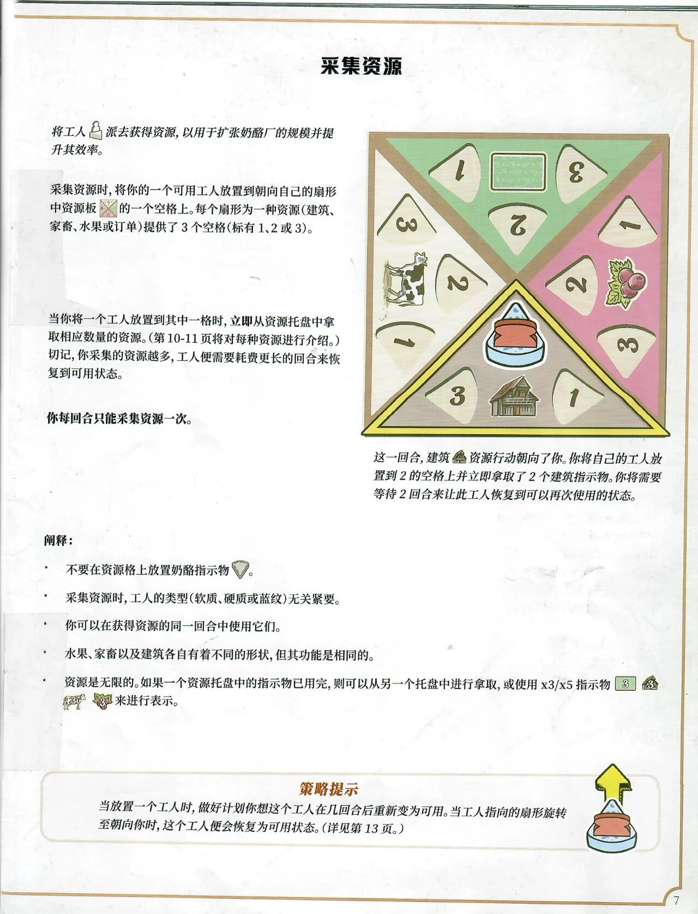
采集资源
将工人〔图标:工人〕派去获得资源,以用于扩张奶酪厂的规模并提升其效率。
采集资源时,将你的一个可用工人放置到朝向自己的扇形中资源板〔图标:资源板〕的一个空格上。每个扇形为一种资源(建筑、家畜、水果或订单)提供了 3 个空格(标有 1、2 或 3)。
当你将一个工人放置到其中一格时,立即从资源托盘中拿取相应数量的资源。(第 10-11 页将对每种资源进行介绍。)切记,你采集的资源越多,工人便需要耗费更长的回合来恢复到可用状态。
你每回合只能采集资源一次。
插图(资源板示意:四个扇形分别提供标有 1、2、3 的空格,并绘有订单、水果、家畜(奶牛)、建筑图标;一个工人米宝立于奶酪块托座上,朝向下方的建筑扇形)
图注:这一回合,建筑〔图标:建筑〕资源行动朝向了你。你将自己的工人放置到 2 的空格上并立即拿取了 2 个建筑指示物。你将需要等待 2 回合来让此工人恢复到可以再次使用的状态。
阐释:
- 不要在资源格上放置奶酪指示物〔图标:奶酪指示物〕。
- 采集资源时,工人的类型(软质、硬质或蓝纹)无关紧要。
- 你可以在获得资源的同一回合中使用它们。
- 水果、家畜以及建筑各自有着不同的形状,但其功能是相同的。
- 资源是无限的。如果一个资源托盘中的指示物已用完,则可以从另一个托盘中进行拿取,或使用 x3/x5 指示物〔图标:x3/x5 指示物(建筑、家畜、水果样式)〕来进行表示。
策略提示
当放置一个工人时,做好计划你想这个工人在几回合后重新变为可用。当工人指向的扇形旋转至朝向你时,这个工人便会恢复为可用状态。(详见第 13 页。)(框右侧另绘有黄色箭头与立于奶酪块托座上的工人米宝装饰插画,不转录)
〔7〕
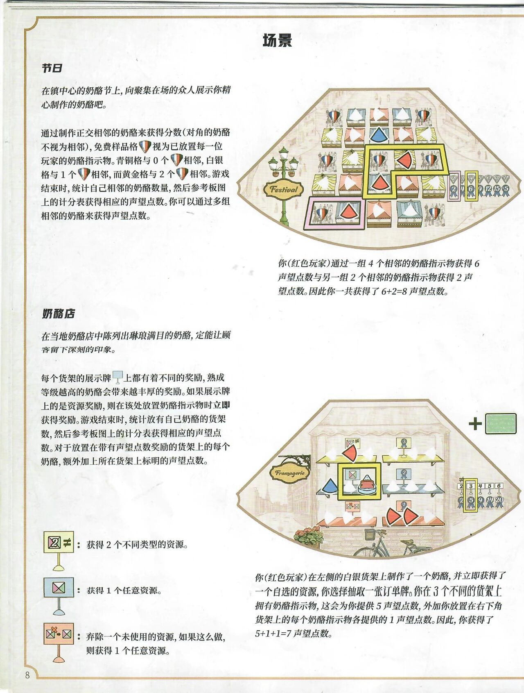
场景
节日
在镇中心的奶酪节上,向聚集在场的众人展示你精心制作的奶酪吧。
通过制作正交相邻的奶酪来获得分数(对角的奶酪不视为相邻),免费样品格〔图标:奶酪指示物〕视为已放置每一位玩家的奶酪指示物。青铜格与 0 个〔图标:奶酪指示物〕相邻,白银格与 1 个〔图标:奶酪指示物〕相邻,而黄金格与 2 个〔图标:奶酪指示物〕相邻。游戏结束时,统计自己相邻的奶酪数量,然后参考板图上的计分表获得相应的声望点数。你可以通过多组相邻的奶酪来获得声望点数。
插图(节日板图:奶酪节市集,整齐排列的奶酪摊位格,摊位间绘有小吃摊与围观人群;立牌题字 "Festival";图中以黄框圈出两组奶酪指示物、粉框圈出一组;右侧为计分表,数字过小,依稀可辨为 1、2、3、5、9、12、16、20〔?〕)
图注:你(红色玩家)通过一组 4 个相邻的奶酪指示物获得 6 声望点数与另一组 2 个相邻的奶酪指示物获得 2 声望点数。因此你一共获得了 6+2=8 声望点数。
奶酪店
在当地奶酪店中陈列出琳琅满目的奶酪,定能让顾客留下深刻的印象。
每个货架的展示牌〔图标:展示牌〕上都有着不同的奖励,熟成等级越高的奶酪会带来越丰厚的奖励。如果展示牌上的是资源奖励,则在该处放置奶酪指示物时立即获得奖励。游戏结束时,统计放有自己奶酪的货架数,然后参考板图上的计分表获得相应的声望点数。对于放置在带有声望点数奖励的货架上的每个奶酪,额外加上所在货架上标明的声望点数。
- 〔图标:展示牌,牌面绘 "2≠"〕:获得 2 个不同类型的资源。
- 〔图标:展示牌,牌面绘 1 个资源图形〕:获得 1 个任意资源。
- 〔图标:展示牌,牌面绘 2 个资源图形并标叉〕:弃除一个未使用的资源,如果这么做,则获得 1 个任意资源。
插图(奶酪店店面:招牌题字 "Fromagerie",店内多层货架摆满奶酪,图中以黄框圈出左侧白银货架上一块红色奶酪指示物;右上角绘有 "+" 号与一张绿色订单牌;右侧计分表数字过小,无法逐字辨认〔?……?〕)
图注:你(红色玩家)在左侧的白银货架上制作了一个奶酪,并立即获得了一个自选的资源,你选择抽取一张订单牌。你在 3 个不同的货架上拥有奶酪指示物,这会为你提供 5 声望点数,外加你放置在右下角货架上的每个奶酪指示物各提供的 1 声望点数。因此,你获得了 5+1+1=7 声望点数。
〔8〕
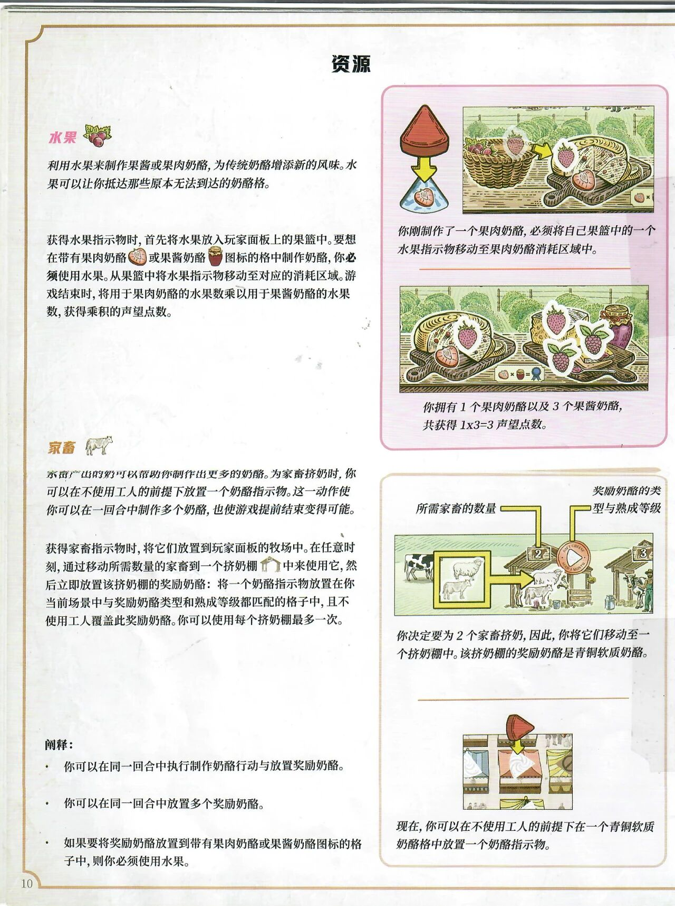
餐馆
为一家著名的法国餐馆的尊贵宾客供应奶酪搭配菜品。
根据每个放有自己奶酪指示物的碟子获得声望点数。通过在同一张桌子上放置 2 个自己的奶酪指示物来完成搭配。游戏结束时,参考板图上的计分表获得相应的声望点数。你所完成的搭配决定了自己每个碟子所值的声望点数。
图中招牌文字:Bistro
你(红色玩家)完成了 1 组搭配,因此计算得分时参考 1 组搭配的一行。
你的青铜碟子值 1 声望点数,
每个白银碟子值 3 声望点数,
而黄金碟子则值 5 声望点数。
因此,你共获得 1+3+3+5=12 声望点数。
城市
将奶酪配送至全国各个城市,以扩大自己的客户群体。
地图被分为 6 个地区,奶酪格会影响所接触的地区。青铜格只影响 1 个地区,白银格影响着 2 个地区,而黄金格同时影响着 3 个地区。游戏结束时,如果在一个地区中你的影响力最高,则你获得该地区的顾客指示物〔顾客指示物图标〕。指示物的分值会根据玩家人数不同而发生变化,如板图上所示。
如果多位玩家拥有相同的最高影响力,则将该地区的指示物翻面至平面〔翻面至平面图标〕。平手的玩家均获得对应的声望点数,分值同样会根据玩家人数不同而发生变化。在 1-2 人局游戏中,平手不会提供声望点数。
图中招牌文字:Villes
你(红色玩家)在紫色、蓝色、白色以及绿色地区均拥有更多奶酪,你获得了这些地区的顾客指示物。你在橙色地区中拥有的奶酪数与另一位玩家平手。因此,你共获得 3+3+4+5=15 声望点数。
〔9〕
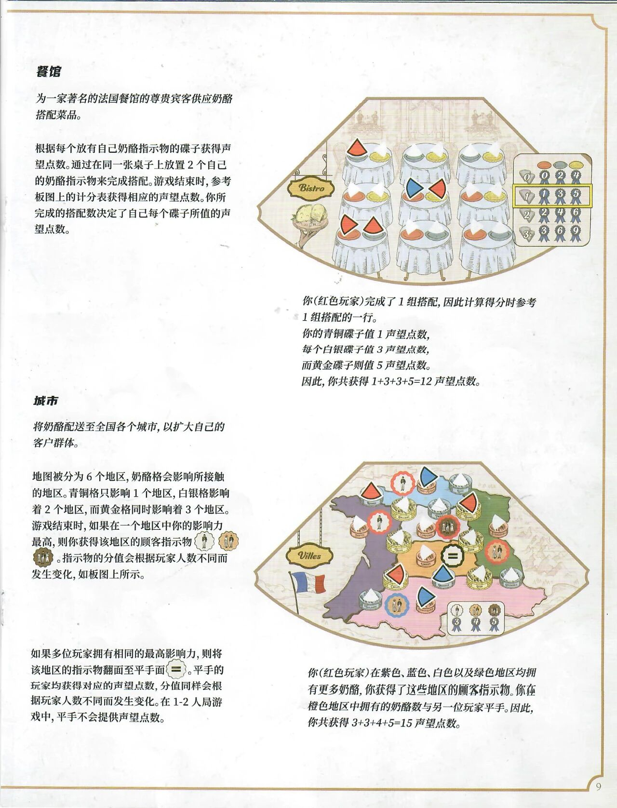
资源
水果
利用水果来制作果酱或果肉奶酪,为传统奶酪增添新的风味。水果可以让你抵达那些原本无法到达的奶酪格。
获得水果指示物时,首先将水果放入玩家面板上的果篮中。要想在带有果肉奶酪〔果肉奶酪图标〕或果酱奶酪〔果酱奶酪图标〕图标的格中制作奶酪,你必须使用水果。从果篮中将水果指示物移动至对应的消耗区域。游戏结束时,将用于果肉奶酪的水果数乘以用于果酱奶酪的水果数,获得乘积的声望点数。
你刚制作了一个果肉奶酪,必须将自己果篮中的一个水果指示物移动至果肉奶酪消耗区域中。
你拥有 1 个果肉奶酪以及 3 个果酱奶酪,共获得 1×3=3 声望点数。
家畜
家畜产出的奶可以帮你制作出更多的奶酪。为家畜挤奶时,你可以在不使用工人的前提下放置一个奶酪指示物。这一动作使你可以在一回合中制作多个奶酪,也使游戏提前结束变得可能。
获得家畜指示物时,将它们放置到玩家面板的牧场中。在任意时刻,通过移动所需数量的家畜到一个挤奶棚〔挤奶棚图标〕中来使用它,然后立即放置该挤奶棚的奖励奶酪:将一个奶酪指示物放置在你当前场景中与奖励奶酪类型和熟成等级都匹配的格子中,且不使用工人覆盖此奖励奶酪。你可以使用每个挤奶棚最多一次。
图中标注:所需家畜的数量;奖励奶酪的类型与熟成等级
你决定要为 2 个家畜挤奶,因此,你将它们移动至一个挤奶棚中。该挤奶棚的奖励奶酪是青铜软质奶酪。
阐释:
- 你可以在同一回合中执行制作奶酪行动与放置奖励奶酪。
- 你可以在同一回合中放置多个奖励奶酪。
- 如果要将奖励奶酪放置到带有果肉奶酪或果酱奶酪图标的格子中,则你必须使用水果。
现在,你可以在不使用工人的前提下在一个青铜软质奶酪格中放置一个奶酪指示物。
〔10〕
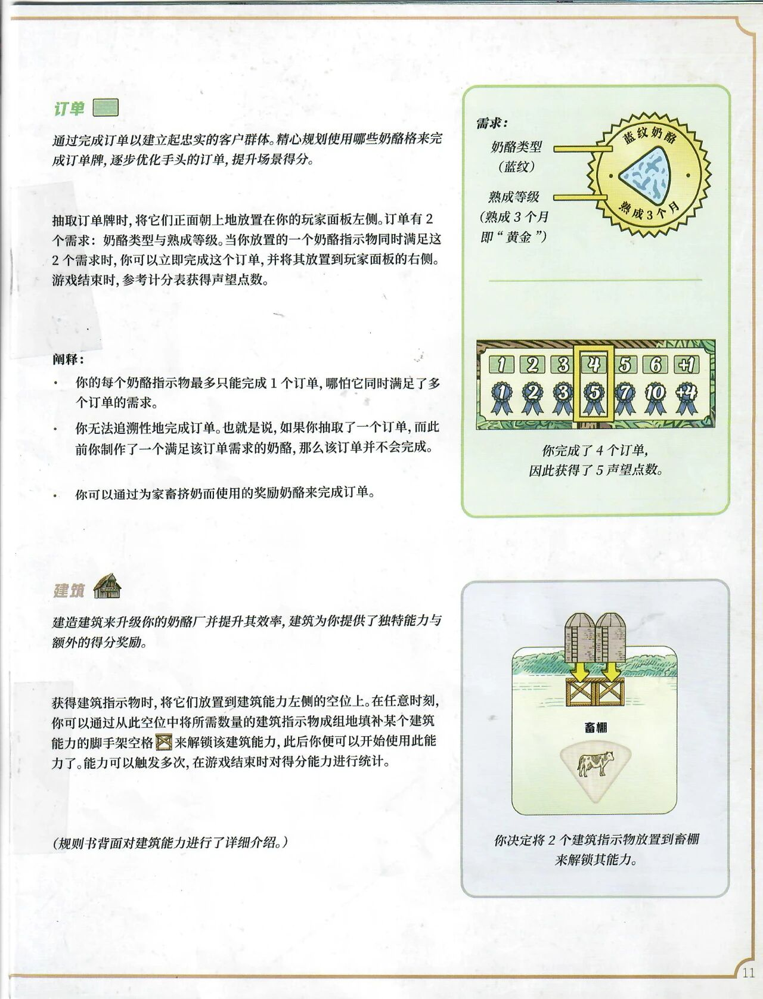
订单
通过完成订单以建立起忠实的客户群体。精心规划使用哪些奶酪格来完成订单牌,逐步优化手头的订单,提升场景得分。
抽取订单牌时,将它们正面朝上地放置在你的玩家面板左侧。订单有 2 个需求:奶酪类型与熟成等级。当你放置的一个奶酪指示物同时满足这 2 个需求时,你可以立即完成这个订单,并将其放置到玩家面板的右侧。游戏结束时,参考计分表获得声望点数。
阐释:
- 你的每个奶酪指示物最多只能完成 1 个订单,哪怕它同时满足了多个订单的需求。
- 你无法追溯性地完成订单。也就是说,如果你抽取了一个订单,而此前你制作了一个满足该订单需求的奶酪,那么该订单并不会完成。
- 你可以通过为家畜挤奶而使用的奖励奶酪来完成订单。
需求:
奶酪类型
(蓝纹)
熟成等级
(熟成 3 个月
即"黄金")
〔右侧徽章图内标注:蓝纹奶酪、熟成3个月〕
1 2 3 4 5 6 +1
1 2 3 5 7 10 +4
你完成了 4 个订单,
因此获得了 5 声望点数。
建筑
建造建筑来升级你的奶酪厂并提升其效率,建筑为你提供了独特能力与额外的得分奖励。
获得建筑指示物时,将它们放置到建筑能力左侧的空位上。在任意时刻,你可以通过从此空位中将所需数量的建筑指示物成组地填补某个建筑能力的脚手架空格〔图标〕来解锁该建筑能力,此后你便可以开始使用此能力了。能力可以触发多次,在游戏结束时对得分能力进行统计。
(规则书背面对建筑能力进行了详细介绍。)
畜棚
你决定将 2 个建筑指示物放置到畜棚
来解锁其能力。
〔11〕
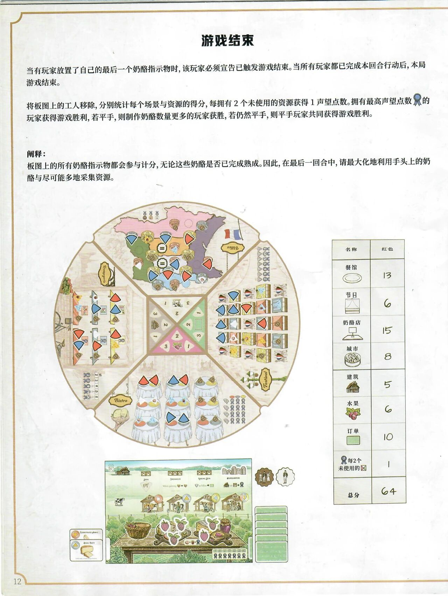
游戏结束
当有玩家放置了自己的最后一个奶酪指示物时,该玩家必须宣告已触发游戏结束。当所有玩家都已完成本回合行动后,本局游戏结束。
将板图上的工人移除,分别统计每个场景与资源的得分,每拥有 2 个未使用的资源获得 1 声望点数。拥有最高声望点数〔图标〕的玩家获得游戏胜利,若平手,则制作奶酪数量更多的玩家获胜,若仍然平手,则平手玩家共同获得游戏胜利。
阐释:
板图上的所有奶酪指示物都会参与计分,无论这些奶酪是否已完成熟成。因此,在最后一回合中,请最大化地利用手头上的奶酪与尽可能多地采集资源。
〔圆形板图插画中场景招牌文字〕Villes、Fromagerie、Bistro、Festival
〔下方玩家面板插画中建筑英文标注〕BARN、GREENHOUSE、LOADING DOCK、HEADQUARTERS
〔插画中其余效果小字〔?……?〕〕
| 名称 | 红色 |
| 餐馆〔图标〕 | 13 |
| 节日〔图标〕 | 6 |
| 奶酪店〔图标〕 | 15 |
| 城市〔图标〕 | 8 |
| 建筑〔图标〕 | 5 |
| 水果〔图标〕 | 6 |
| 订单〔图标〕 | 10 |
| 〔图标〕每2个未使用的〔图标〕 | 1 |
| 总分 | 64 |
〔12〕
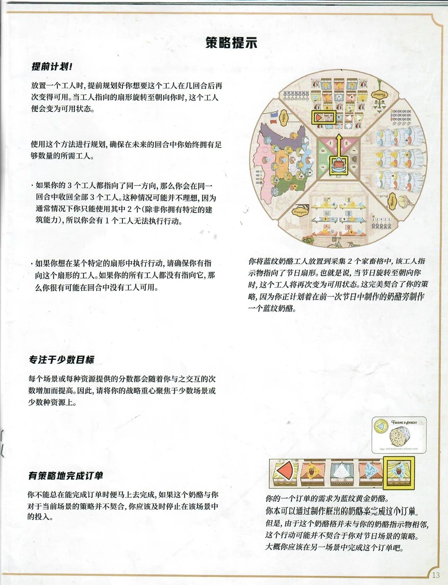
策略提示
提前计划!
放置一个工人时,提前规划好你想要这个工人在几回合后再次变得可用。当工人指向的扇形旋转至朝向你时,这个工人便会变为可用状态。
使用这个方法进行规划,确保在未来的回合中你始终拥有足够数量的所需工人。
·如果你的3个工人都指向了同一方向,那么你会在同一回合中收回全部3个工人。这种情况可能并不理想,因为通常情况下你只能使用其中2个(除非你拥有特定的建筑能力),所以你会有1个工人无法执行行动。
·如果你想在某个特定的扇形中执行行动,请确保你有指向这个扇形的工人。如果你的所有工人都没有指向它,那么你很有可能在回合中没有工人可用。
你将蓝纹奶酪工人放置到采集2个家畜格中,该工人指示物指向了节日扇形。也就是说,当节日旋转至朝向你时,这个工人将再次变为可用状态。这完美契合了你的策略,因为你正计划着在前一次节日中制作的奶酪旁制作一个蓝纹奶酪。
专注于少数目标
每个场景或每种资源提供的分数都会随着你与之交互的次数增加而提高。因此,请将你的战略重心聚焦于少数场景或少数资源上。
有策略地完成订单
你不能总在能完成订单时便马上去完成,如果这个奶酪与你对于当前场景的策略并不契合,你应该及时停止在该场景中的投入。
你的一个订单的需求为蓝纹黄金奶酪。
你本可以通过制作框出的奶酪来完成这个订单。
但是,由于这个奶酪格并未与你的奶酪指示物相邻,
这个行动可能并不契合于你对节日场景的策略。
大概你应该在另一场景中完成这个订单吧。
〔13〕
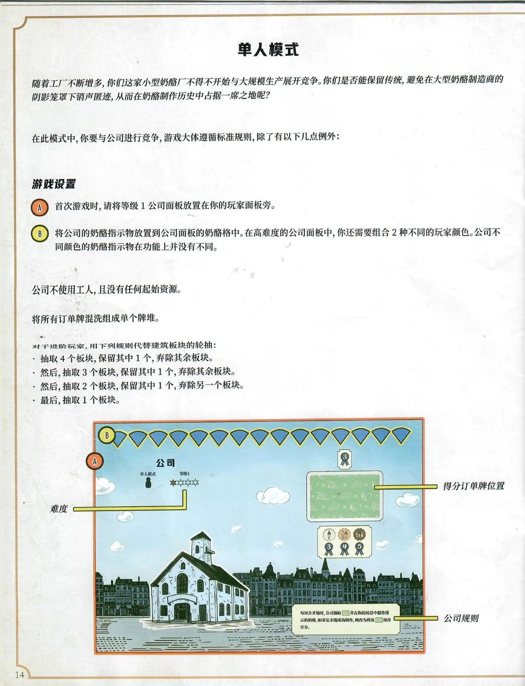
单人模式
随着工厂不断增多,你们这家小型奶酪厂不得不开始与大规模生产展开竞争。你们是否能保留传统,避免在大型奶酪制造商的阴影笼罩下销声匿迹,从而在奶酪制作历史中占据一席之地呢?
在此模式中,你要与公司进行竞争,游戏大体遵循标准规则,除了有以下几点例外:
游戏设置
A 首次游戏时,请将等级1公司面板放置在你的玩家面板旁。
B 将公司的奶酪指示物放置到公司面板的奶酪格中。在高难度的公司面板中,你还需要组合2种不同的玩家颜色。公司不同颜色的奶酪指示物在功能上并没有不同。
公司不使用工人,且没有任何起始资源。
将所有订单牌混洗组成单个牌堆。
对于进阶玩家,用下列规则代替建筑板块的轮抽:
·抽取4个板块,保留其中1个,弃除其余板块。
·然后,抽取3个板块,保留其中1个,弃除其余板块。
·然后,抽取2个板块,保留其中1个,弃除另一个板块。
·最后,抽取1个板块。
A
B
公司
难度
得分订单牌位置
公司规则
〔14〕
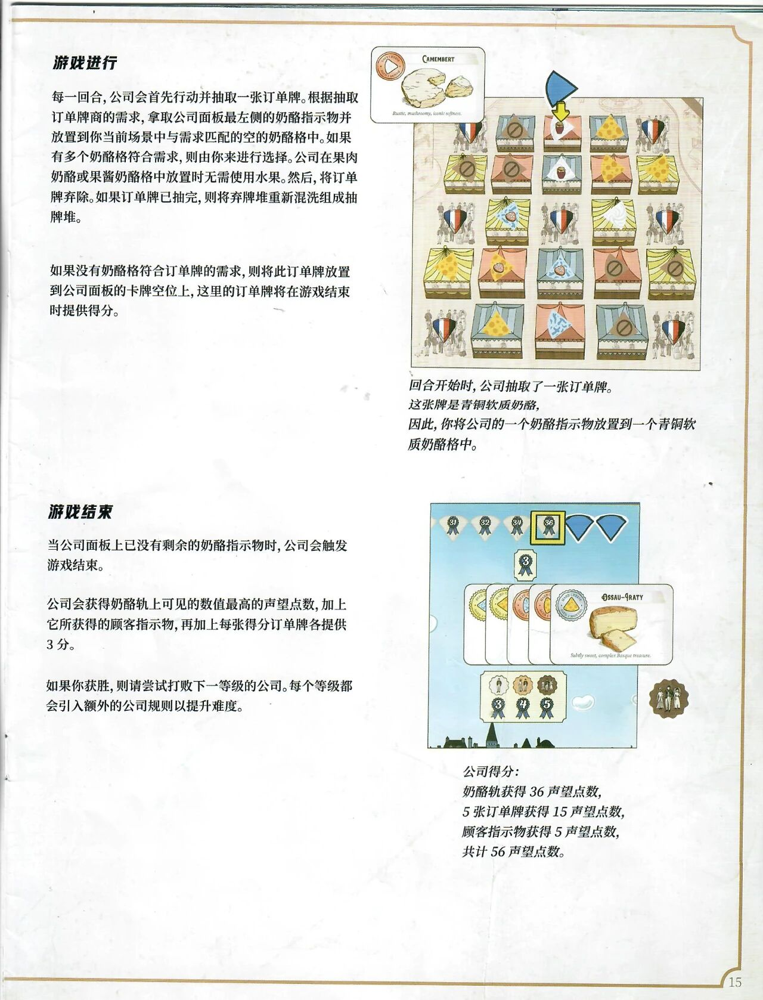
游戏进行
每一回合,公司会首先行动并抽取一张订单牌。根据抽取订单牌商的需求,拿取公司面板最左侧的奶酪指示物并放置到你当前场景中与需求匹配的空的奶酪格中。如果有多个奶酪格符合需求,则由你来进行选择。公司在果肉奶酪或果酱奶酪格中放置时无需使用水果。然后,将订单牌弃除。如果订单牌已抽完,则将弃牌堆重新混洗组成抽牌堆。
如果没有奶酪格符合订单牌的需求,则将此订单牌放置到公司面板的卡牌空位上,这里的订单牌将在游戏结束时提供得分。
卡面文字:CAMEMBERT
Rustic, mushroomy, iconic softness.
印章环形小字:〔?〕
图注:
回合开始时,公司抽取了一张订单牌。
这张牌是青铜软质奶酪,
因此,你将公司的一个奶酪指示物放置到一个青铜软质奶酪格中。
游戏结束
当公司面板上已没有剩余的奶酪指示物时,公司会触发游戏结束。
公司会获得奶酪轨上可见的数值最高的声望点数,加上它所获得的顾客指示物,再加上每张得分订单牌各提供 3 分。
如果你获胜,则请尝试打败下一等级的公司。每个等级都会引入额外的公司规则以提升难度。
卡面文字:OSSAU-IRATY
Subtly sweet, complex Basque treasure.
印章环形小字:〔?〕
图中奖牌数字:奶酪轨 31、32、34〔?〕、36(黄框高亮);单独一枚 3;顾客奖牌 3、4、5
图注:
公司得分:
奶酪轨获得 36 声望点数,
5 张订单牌获得 15 声望点数,
顾客指示物获得 5 声望点数,
共计 56 声望点数。
〔15〕
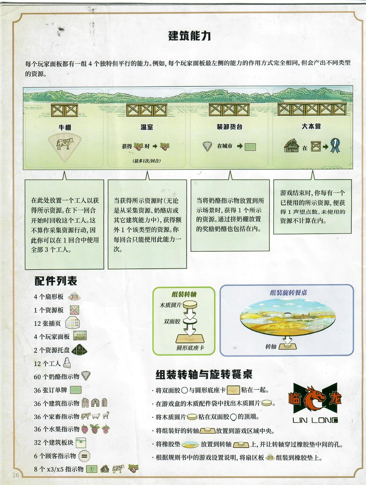
建筑能力
每个玩家面板都有一组 4 个独特但平行的能力。例如,每个玩家面板最左侧的能力的作用方式完全相同,但会产出不同类型的资源。
图中标注(自左至右四个建筑能力):
牛棚
温室:获得〔图标〕时 → 〔图标〕
(最多1次/回合)
装卸货台:〔图标〕 在城市 → 〔图标〕
大本营:〔图标〕 在 〔图标〕 → 〔图标〕(绶带图内数字:1)
在此处放置一个工人以获得所示资源。在下一回合开始时回收这个工人。这不算作采集资源行动,因此你可以在 1 回合中使用全部 3 个工人。
当获得所示资源时(无论是从采集资源、奶酪店或其它建筑能力中),获得额外 1 个该类型的资源。你每回合只能使用此能力一次。
当将奶酪指示物放置到所示场景时,获得 1 个所示的资源。通过挤奶棚放置的奖励奶酪也包括在内。
游戏结束时,你每有一个已使用的所示资源,便获得 1 声望点数。未使用的资源不计算在内。
配件列表
- 4 个扇形板
- 1 个资源板
- 12 张插页
- 4 个玩家面板
- 2 个资源托盘
- 12 个工人
- 60 个奶酪指示物
- 36 张订单牌
- 36 个建筑指示物
- 36 个家畜指示物
- 36 个水果指示物
- 32 个建筑板块
- 6 个顾客指示物
- 8 个 x3/x5 指示物
图框标注(左框,自上而下):
组装转轴
木质圆片
双面胶
圆形底座卡
图框标注(右框):
组装旋转餐桌
转轴
组装转轴与旋转餐桌
·将双面胶○与圆形底座卡〔图标〕粘在一起。
·在游戏盒的木质配件袋中找出木质圆片〔图标〕。
·将木质圆片〔图标〕粘在双面胶○的顶端。
·将组装好的转轴〔图标〕放置到游戏区域中央。
·将橡胶垫〔图标〕放置到转轴〔图标〕上,并让转轴穿过橡胶垫中间的孔。
·根据规则书中的游戏设置说明,将扇区板〔图标〕组装到橡胶垫上。
〔16〕